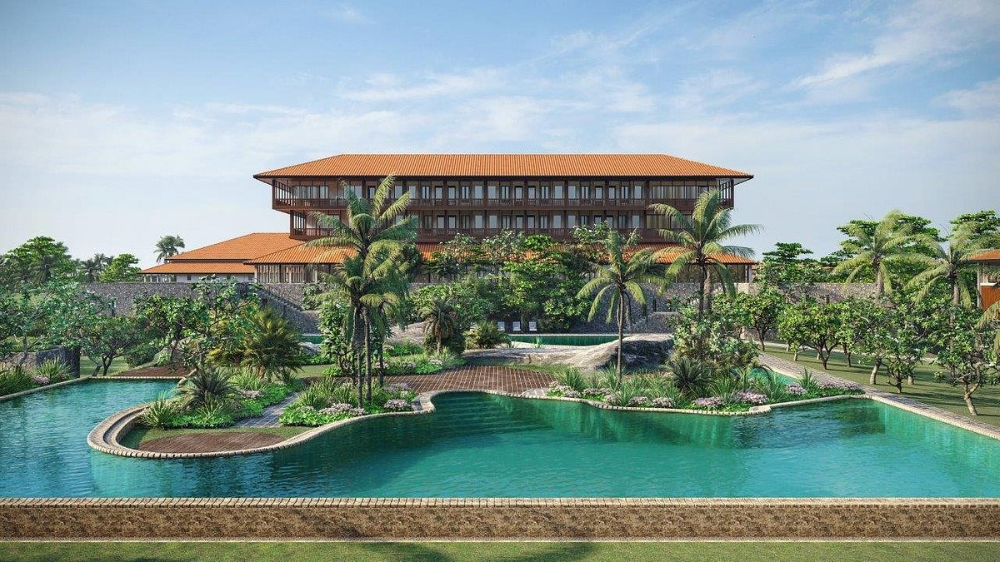
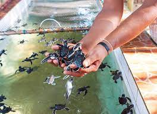
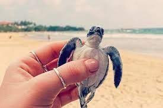
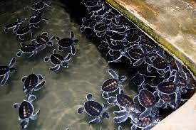
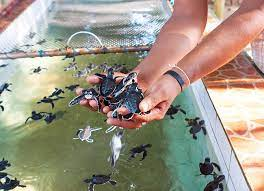
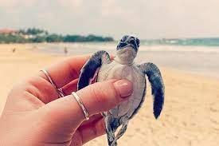
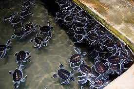

BENTOTA BEACH
Bentota Beach, nestled on Sri Lanka's southwestern coast, captivates visitors with its pristine sands, crystal-clear waters, and tranquil atmosphere. The beach offers a perfect blend of relaxation and adventure, inviting guests to unwind, swim, indulge in water sports, or simply bask in the sun's warm embrace.

Bentota offers a range of exquisite hotels for every traveler. From luxurious beachfront resorts with stunning views to boutique hotels nestled in lush gardens, guests can enjoy world-class amenities, impeccable service, and a serene ambiance, making their stay in Bentota truly
unforgettable.
LUXURIOUS ACCOMMODATIONS IN BENTOTA
Bentota offers a range of exquisite hotels for every traveler. From luxurious beachfront resorts with stunning views to boutique hotels nestled in lush gardens, guests can enjoy world-class amenities, impeccable service, and a serene ambiance, making their stay in Bentota truly
unforgettable.
 




